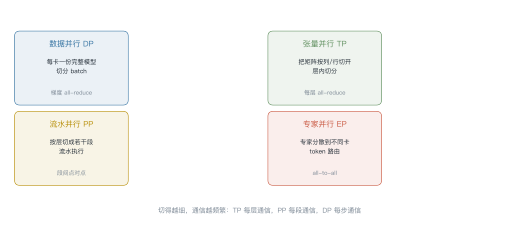
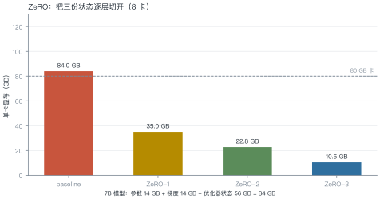
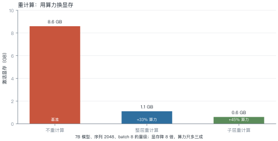
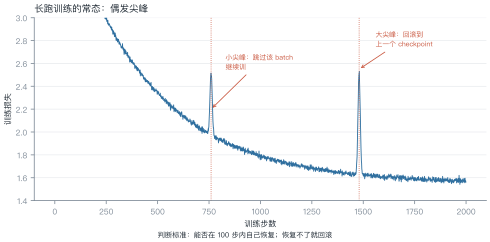

第 14 讲 训练系统¶
本讲位置
第 13 讲管"怎么用"，本讲管"怎么训"。同样是显存与带宽的账，但训练多了一个反向传播，账要复杂一倍。
📅 事实核查至 2026-11
ZeRO（Rajbhandari et al., 2020）、Megatron-LM（Shoeybi et al., 2019）、activation checkpointing（Chen et al., 2016）均已核对原文。
学习目标¶
学完本讲，你应该能够：
- 说出四种并行各切什么、通信开销多大；
- 用 ZeRO 三阶段算出单卡显存；
- 解释重计算为什么"用算力换显存"，代价是多少；
- 算 MFU，并判断一个训练任务是否跑得健康。
0 直觉：一张卡放不下¶
训练 7B 模型要多少显存？
| 项 | 大小 | 说明 |
|---|---|---|
| 参数（bf16） | 14 GB | 2 字节/参数 |
| 梯度（bf16） | 14 GB | 与参数同尺寸 |
| fp32 主权重 | 28 GB | 更新用，防止精度丢失 |
| Adam 一阶动量 | 28 GB | fp32 |
| Adam 二阶动量 | 28 GB | fp32 |
| 合计 | 112 GB | 还没算激活 |
一张 80 GB 卡放不下。所以必须切——这就是并行策略存在的理由。
一句话总结
训练系统 = 把 112 GB 的状态切到多张卡上，同时让通信开销可接受。
1 四种并行¶

| 并行 | 切什么 | 通信时机 | 通信量 | 适用 |
|---|---|---|---|---|
| DP | batch | 每步一次 | \(2N\)（all-reduce 梯度） | 通用 |
| TP | 层内矩阵 | 每层两次 | \(2\times\) 激活大小 | 单机内（NVLink） |
| PP | 层 | 每段一次 | 激活大小（点对点） | 跨机 |
| EP | 专家 | 每层 | token × top-k | MoE |
1.1 怎么选¶
一个实用的决策顺序：
- 先看模型能不能放进单卡：放得下就只用 DP；
- 放不下就加 TP：但 TP 度不超过单机 GPU 数（跨机会被带宽拖死）；
- 还不够就上 PP：按层切，跨机也能接受；
- MoE 模型加 EP：专家天然可分。
经验值：TP 度 ≤ 8（一台机器内），PP 度 ≤ 16（再多流水气泡太大），其余用 DP 补。
例 14.1 通信量对比¶
7B 模型、8 卡、每卡 batch 4。
DP：每步 all-reduce 一次梯度，通信量
TP（度 8）：每层两次 all-reduce，每次激活大小 \(4\times2048\times4096\times2\ \text{B}=67\) MB，32 层：
结论：TP 的通信量反而比 DP 小——因为切的是层内，数据量小。但 TP 的通信更频繁（每层都要同步），对延迟敏感，所以只能在 NVLink 域内做。
2 ZeRO：把三份状态切开¶

| 阶段 | 切什么 | 单卡显存（8 卡） | 额外通信 |
|---|---|---|---|
| baseline | 不切 | 84 GB | — |
| ZeRO-1 | 优化器状态 | 35 GB | 1× |
| ZeRO-2 | + 梯度 | 22.8 GB | 1× |
| ZeRO-3 | + 参数 | 10.5 GB | 1.5× |
例 14.2 算一遍¶
7B 模型，\(N=7\times10^9\)，8 卡。
每参数字节数：bf16 参数 2 + bf16 梯度 2 + fp32 主权重 4 + Adam \(m\) 4 + Adam \(v\) 4 = 16 字节。
ZeRO-1（只切优化器状态 56 GB）：
ZeRO-2（再切梯度）：
ZeRO-3（连参数一起切）：
从这个例子里能读出三件事
- 优化器状态是大头（56/112 = 50%）：切它收益最大；
- ZeRO-3 的代价是通信：每次前向都要 all-gather 参数，通信量涨 1.5 倍；
- 切到 14 GB 后，激活反而成了瓶颈——这才需要重计算。
2.1 FSDP 与 ZeRO 的关系¶
PyTorch 原生的 FSDP（fully sharded data parallel）本质上就是 ZeRO-3：参数、梯度、优化器状态都按卡分片，前向时临时 all-gather，用完立刻释放。
两者差别在工程细节：
- ZeRO 来自 DeepSpeed，配置项多，对混合并行支持更成熟；
- FSDP 是 PyTorch 一等公民，与
torch.compile、DTensor集成更好。
选型建议：新项目优先 FSDP，需要极致调优再考虑 DeepSpeed。
3 重计算：用算力换显存¶

原理：前向时不保存中间激活，反向需要时再算一遍。因为反向本身就要重算一部分，额外开销通常只有 30%–40%。
3.1 怎么实现¶
PyTorch 里一行就能开：
from torch.utils.checkpoint import checkpoint
def forward_block(x, block):
return checkpoint(block, x, use_reentrant=False)
注意两点：
- 只包住计算量大的部分（注意力、FFN），包住整个模型反而更慢；
- 随机性要固定：dropout 在重算时必须得到相同结果，否则前后不一致。
例 14.3 这笔买卖值不值¶
假设单卡显存 80 GB，模型状态占 35 GB（ZeRO-1），剩 45 GB 给激活。
- 不重计算：batch 只能开到 4；
- 重计算：激活降到 ⅛，batch 能开到 32。
吞吐：大 batch 的 GPU 利用率更高，实测吞吐提升往往超过 33% 的算力损失——净赚。
什么时候不划算：模型很小、激活本来就不占地方时，重计算纯属浪费。
4 MFU：训练跑得健不健康¶
例 14.4 算一次 MFU¶
1024 张 A100，每张 bf16 峰值 312 TFLOPS，实测吞吐 \(1.2\times10^{17}\) FLOPs/s。
怎么读这个数：
| MFU | 含义 |
|---|---|
| < 30% | 有问题：通信瓶颈、数据加载慢、batch 太小 |
| 35%–45% | 正常水平 |
| > 50% | 优秀（需要精细调优） |
为什么很难超过 50%：训练里有大量非计算时间——all-reduce 等待、优化器更新、数据加载、checkpoint 写入。
4.1 为什么 MFU 上不去¶
四个常见瓶颈，按影响排序：
- 通信等待：TP/PP 的同步让 GPU 空转，占 20%–40%；
- 数据加载：预处理跟不上，GPU 等数据；
- 小 batch：矩阵乘法规模不够，无法填满 SM；
- 优化器开销：Adam 更新是逐元素操作，带宽受限。
排查顺序：先看 GPU 利用率曲线（是否周期性掉到 0），再看通信占比，最后看数据管道。
5 长跑稳定性¶

四个常见原因：
| 原因 | 表现 | 对策 |
|---|---|---|
| 数据异常 | 某个 batch 后突然跳 | 跳过 + 过滤数据 |
| 学习率过高 | 周期性尖峰 | 降 lr 或加 warmup |
| fp16 溢出 | 出现 inf/nan | 换 bf16 或加 loss scaling |
| 梯度爆炸 | 尖峰后不恢复 | 梯度裁剪（norm ≤ 1.0） |
5.1 稳定性工程¶
三条实践：
- 每 N 步存 checkpoint：N 取 100–500，回滚成本可控；
- 监控梯度范数：正常应在 0.1–1.0 波动，突然上 10 就是信号；
- 记录数据指纹：尖峰出现时能定位到具体 batch。
5.2 长跑必然遇到硬件故障¶
按公开数据，千卡集群的日均故障率在 1%–3% 量级。一次 30 天的训练，几乎必然遇到几次节点掉线。
三个必备能力：
- 自动重启：检测到进程退出就重新拉起，从最近 checkpoint 恢复；
- 弹性训练：卡数变化后能继续（需要重新切分，复杂度高）；
- 故障隔离：把坏节点标记出来，调度器不再分配。
没有这三样，长跑训练的"有效训练时间"可能只有 70%。
6 工程要点与坑¶
- 先算显存再选并行：112 GB 的状态，8 卡 ZeRO-3 才够。
- TP 别跨机：跨机 all-reduce 会让 TP 效率掉一半以上。
- PP 的气泡要算：流水线空泡率约 \((P-1)/(M+P-1)\)，\(P\) 是段数、\(M\) 是 micro-batch 数。
- bf16 优于 fp16：动态范围大，几乎不需要 loss scaling。
- checkpoint 要异步写：同步写会让 GPU 停几十秒。
-
别忽视数据管道：预处理 worker 不够，GPU 利用率会周期性掉到 0。
-
弹性训练要慎用：卡数变化会改变全局 batch，影响学习率调度。
- 日志要带 step 与 timestamp：出问题时能对齐多个 rank 的记录。
def train_memory_gb(n_params: float, world: int, zero_stage: int = 3) -> float:
"""估算单卡显存（GB），不含激活。16 字节/参数 = bf16 参数+梯度 + fp32 主权重 + Adam m/v"""
total = n_params * 16 / 1e9
if zero_stage == 0:
return total
if zero_stage == 1:
return n_params * (2 + 2) / 1e9 + n_params * 12 / 1e9 / world
if zero_stage == 2:
return n_params * 2 / 1e9 + n_params * 14 / 1e9 / world
return total / world
for stage in (0, 1, 2, 3):
print(f"ZeRO-{stage}: {train_memory_gb(7e9, 8, stage):.1f} GB/卡")
7 论文与延伸¶
| 年份 | 论文 | 一句话贡献 |
|---|---|---|
| 2019 | Megatron-LM | 张量并行的工程实现 |
| 2020 | ZeRO | 三阶段切分 |
| 2021 | FSDP | PyTorch 的分片数据并行 |
| 2022 | Megatron-LM 的并行组合实践 | TP+PP+DP 的组合 |
| 2016 | Training Deep Nets with Sublinear Memory Cost | 重计算 |
8 习题¶
🟢 概念题
- 为什么 TP 只能在单机内做？跨机会怎样？
- ZeRO-3 为什么通信量比 ZeRO-1 大？
🟡 推导题
- 用 16 字节/参数算：13B 模型在 8 卡 ZeRO-2 下的单卡显存。
- 推导流水线气泡率 \((P-1)/(M+P-1)\)，并说明为什么 micro-batch 越多气泡越小。
🔴 实现题
- 用
train_memory_gb画"单卡显存 vs 卡数"曲线（ZeRO-½/3 三条）。 - 在小模型上测量开启重计算前后的吞吐与显存，验证"净赚"的结论。
9 本讲小结¶
一个数字
16 字节/参数 = bf16 参数 2 + 梯度 2 + fp32 主权重 4 + Adam m 4 + v 4
四种并行
DP 切数据 · TP 切层内 · PP 切层 · EP 切专家
三个阶段
ZeRO-1 切优化器 · ZeRO-2 加梯度 · ZeRO-3 加参数
一句话
训练系统的核心是把 112 GB 的状态切开，同时让通信别成为新瓶颈。
来源¶
- ZeRO、Megatron-LM、重计算的结论核对自原文，链接见 §7，核查日期 2026-11。